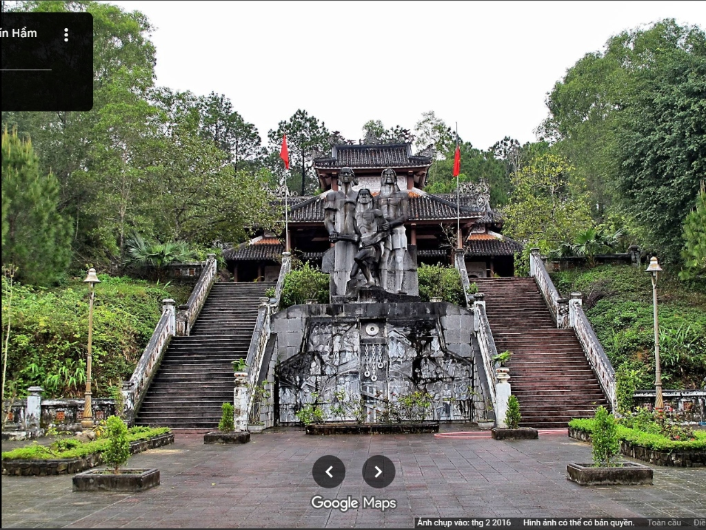

Hầm 8CHUỒNG CỌP

DI TÍCH LỊCH SỬ CHÍN HẦM
CHÍN HẦMĐỒI BA ĐỒN · CỐ ĐÔ HUẾ
Bảo tàng số cho di tích lịch sử Chín Hầm — Khám phá ký ức lịch sử qua trải nghiệm tương tác, audio guide song ngữ, bản đồ 3D và chatbot AI dành cho du khách, học sinh, sinh viên và cộng đồng.
Thực dân Pháp xây 9 hầm kho đạn kiên cố sâu trong đồi núi.
02 Địa Ngục Trần GianBạo chúa Ngô Đình Cẩn lập ngục tối đày ải tù chính trị.
03 Phá Hầm 1963Ngày 02/11/1963 nhân dân Huế đập tan xiềng xích, cứu tù nhân.
04 Di Sản Số HóaKhông gian 3D tương tác kết nối lịch sử hào hùng với thế hệ trẻ.
Góc nhìn bao quát từ trên cao giúp du khách dễ dàng định vị các công trình trung tâm: Nhà Tưởng Niệm Chính trên đỉnh đồi, Đài Liệt Sĩ, Nhà Tả Vu (trưng bày hiện vật) & Nhà Hữu Vu trước khi bước vào hành trình tham quan sâu.
Khu di tích Chín Hầm nằm trên sườn đồi Ba Đồn (phường An Tây, TP. Huế), cách trung tâm cố đô khoảng 6km. Năm 1941, quân đội Pháp xây dựng cụm 9 căn hầm kiên cố bằng bê tông cốt thép nửa chìm nửa nổi sâu trong lòng núi để cất giấu vũ khí chiến lược.
Sau năm 1954, Ngô Đình Cẩn – cố vấn chỉ đạo miền Trung của chế độ Ngô Đình Diệm – đã cải tạo cụm hầm này thành nhà tù bí mật tàn khốc bậc nhất miền Nam. Từng bậc đá mòn, từng mảng tường ẩm ướt rêu phong nơi đây vẫn còn khắc ghi ý chí kiên trung của những người con trung kiên bất khuất.
Khám phá 9 căn hầmHiểu rõ bối cảnh lịch sử, vị trí địa lý đồi Ba Đồn và kết cấu cụm kho đạn kiên cố nửa chìm nửa nổi do quân đội Pháp xây dựng năm 1941.
Khảo sát 9 căn hầm thực địa, nhà chứng tích, trải nghiệm không gian biệt giam ngột ngạt và đối chiếu tài liệu lịch sử đã được kiểm chứng.
Lắng nghe giọng kể thuyết minh Audio Guide song ngữ, đặt câu hỏi cùng Trợ lý AI và dâng nén tâm hương tưởng niệm các chiến sĩ kiên trung.
Không gian kể chuyện sống động bằng hình ảnh, hiện vật khảo cổ và tư liệu đối chiếu, kết nối trực tiếp với góc nhìn Flycam thực địa và sa bàn 9 căn hầm.
Khu biệt giam tử tù chính trị đặc biệt khắc nghiệt và tàn bạo nhất Chín Hầm, nơi ghi dấu những cực hình tột cùng nhưng ngời sáng ý chí kiên trung bất khuất của người cộng sản.
Mỗi căn hầm là một trang sử đau thương nhưng hào hùng. Hãy bước chậm lại để lắng nghe tiếng vọng của lịch sử và sự bất khuất của con người nơi đây.
Binh đoàn viễn chinh Pháp xây dựng 9 căn hầm bê tông ẩn mình sau những vách đồi thông.
1941Ngô Đình Cẩn biến cụm kho đạn thành 'địa ngục trần gian' giam cầm người yêu nước.
1954Tù nhân chịu cảnh thiếu dưỡng khí, giòi bọ, đòn roi mà vẫn giữ trọn khí tiết cách mạng.
Ký ứcQuần chúng nhân dân và sinh viên Huế vùng lên đập tan xiềng xích, đưa tù nhân trở về.
1963Xếp hạng di tích Quốc gia năm 1993, nay được chuyển đổi số thành không gian 3D tương tác.
Hiện tạiTrải nghiệm tương tác 3D WebGL theo dòng thời gian, nhân vật lịch sử và từng căn hầm sâu trong lòng đồi thông.
Bảo tàng số 3D →Giọng kể truyền cảm song ngữ Việt - Anh, tái hiện âm vang hào hùng, tối ưu trọn vẹn cho thiết bị di động khi tham quan.
Nghe Audio Guide →Trợ lý AI thông minh giải đáp thắc mắc 24/7 dựa trên hồ sơ tư liệu lịch sử đã được thẩm định và kiểm chứng.
Trò chuyện với AI →Cánh cửa ngục tối đã vĩnh viễn khép lại. Ngày nay trên đồi Ba Đồn, tiếng thông reo hòa cùng tiếng chuông tưởng niệm và hoa rừng xanh ngát — nhắc nhở chúng ta trân trọng giá trị thiêng liêng của hòa bình và độc lập tự do.

Cụm tượng đài ba chiến sĩ cách mạng kiên trung vươn mình đập tan xiềng xích nô dịch, tọa lạc trang nghiêm trên thềm đá giữa rừng thông. Hai dãy bậc tam cấp đối xứng dẫn thẳng lên Nhà dâng hương tưởng niệm trên đỉnh đồi.
Dự án số hóa di sản Chín Hầm tiên phong kết hợp kiến trúc thực địa, không gian số 3D WebGL, âm thanh tương tác và trí tuệ nhân tạo, mang câu chuyện lịch sử bất khuất đến gần hơn với du khách, học sinh, sinh viên và cộng đồng.